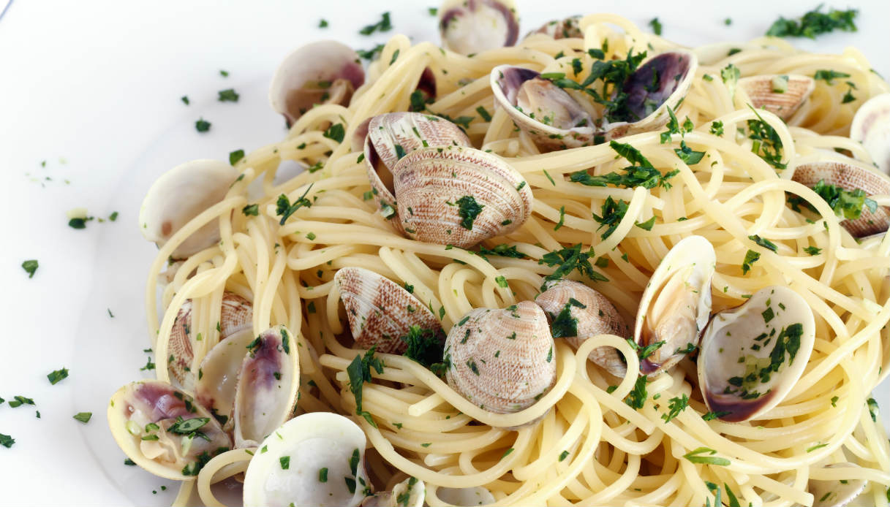

Spaghetti with Clams

What's Spaghetti with Clams:
Directly from the Campania region, spaghetti with clams is a classic of Italian cuisine and one of the most loved, replicated and interpreted pasta dishes .
Among fish first courses, it is perhaps among those chosen when one has to try one's hand in the kitchen for the first time with 'marine' matter, but it is anything but basic to prepare: a few tricks and shrewdness are needed for a creamy, fragrant result with a perfect balance between pasta and molluscs!
Ingredients:
- Spaghetti
- Garlic
- Virgin Olive Oil
- Salt and Pepper
- Clams
- Parsley
Steps:
- Clean your Clams if needed and cook them in pan with olive oil and garlic.
- When your clams are all opened remove them from fire.
- Bring your water to boil and cook your spaghetti.
- Mince you parsley and put it aside.
- When your spaghetti are ready, throw them into the pan with the oil used previously for clams, cook them for one minute then add clams and parsley and cook for another 30 seconds.
- Remove from fire and serve.